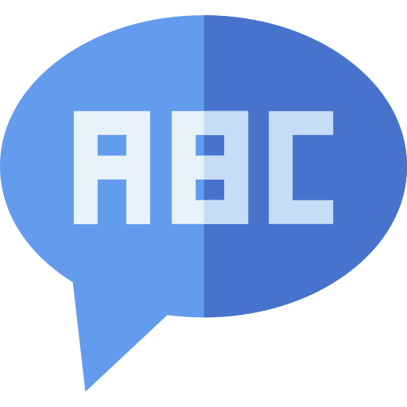

TAKUTO KOYAMA
PORTFOLIO
ケモインフォマティクスを利用したAI創薬の研究、
特に現在はインシリコ・スクリーニングに関する研究を行っています。
ABOUT
私は現在、京都大学医学研究科の修士課程にてAI創薬の研究に取り組んでいます。
学部時代は薬学部にて創薬に関する知識を学び、その中で現状の創薬プロセスが抱えるコスト面での大きな課題について学び、それらの課題を解決する新たなアプローチとしてAI創薬の存在を知りました。
大学院での研究活動を通じてAI創薬を実現するための技術を学び、AI創薬の研究開発に貢献したいと考えています。
BIOGRAPHY
2018年: 東京大学理科一類入学
2020年: 東京大学薬学部進学
2022年: 東京大学薬学部薬科学科卒業
2022年: 京都大学医学研究科人間健康科学系専攻修士課程進学
2024年〜2027年: 日本学術振興会特別研究員DC1（採用内定）
RECENT WORKS
ARTICLE
[1] Takuto Koyama, Shigeyuki Matsumoto, Hiroaki Iwata, Ryosuke Kojima, and Yasushi Okuno. (2023). Improving Compound–Protein Interaction Prediction by Self-Training with Augmenting Negative Samples. J of Chem Inf Model. [ARTICLE]
[2] Hiroaki Iwata, Taichi Nakai, Takuto Koyama, Shigeyuki Matsumoto, Ryosuke Kojima, and Yasushi Okuno. (2023). VGAE-MCTS: a New Molecular Generative Model combining Variational Graph Auto-Encoder and Monte Carlo Tree Search. ChemRXiv. [PREPRINT]
PRESENTATION
[3] 小山 拓豊, 岩田 浩明, 松本 篤幸, 小島 諒介, 大塚 教雄, 長谷川 亜樹, 奥野 恭史.「Insight into Federated Learning for Compound-Protein Interaction Prediction」, 『情報計算科学生物学会（CBI学会）2023年大会』,東京,10月, 2023年. [Oral]
[4] 伊藤 彰真, 小山 拓豊, 岩田 浩明, 松本 篤幸, 奥野 恭史. 「Exploring Chemical Structural Insights of ADME Properties via Interpretable Deep Learning」, 『情報計算科学生物学会（CBI学会）2023年大会』,東京,10月, 2023年. [Poster]
[5] 岩田 浩明, 中井 大智, 小山 拓豊, 松本 篤幸, 小島 諒介, 奥野 恭史. 「A New Molecular Generation Method Combining Deep Learning and Reinforcement Learning」, 『情報計算科学生物学会（CBI学会）2023年大会』,東京,10月, 2023年. [Poster]
[6] Takuto Koyama, Shigeyuki Matsumoto, Hiroaki Iwata, Ryosuke Kojima,Yasushi Okuno. Iterative Data Augmentation of near boundary negative samples improves the model generalizability in Compound-Protein Interaction Prediction,ISMB/ECCB 2023 MLCSB, Lyon, France, Jul 2023. [POSTER]
[7] 小山 拓豊, 松本 篤幸, 岩田 浩明, 小島 諒介, 奥野 恭史. 「Improvement of Compound-Protein Interactions Prediction with Semi-supervised Learning 」, 『情報計算科学生物学会（CBI学会）2022年大会』,東京,10月, 2022年. [POSTER]
[8] 岩田 浩明, 林 祥弘, 小山 拓豊, 長谷川 亜樹, 寺山 慧, 奥野 恭史 「Clustering of Pharmaceutical Excipients Using Pretrained Convolutional Neural Networks」, 『日本薬剤学会第38年会』, 愛知, 5月, 2023年. [POSTER]
SKILL

Python
Pythonコーディングを用いた研究活動経験 PytorchおよびTensorflowを用いた深層学習実装経験

English
TOEIC 905点

Statistics
統計検定 1級

Mathmatics
JDLA E資格
全珠連 珠算 五段
全珠連 暗算 七段